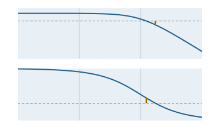

Regelungstechnik und Signalverarbeitung
Rechenkerne ohne Oberfläche für lineare zeitinvariante Systeme: Übertragungsfunktionen mit Frequenzgang, Reserven und Nyquist-Kriterium, Wurzelortskurve, Zustandsraum mit Diskretisierung und Polvorgabe, PID mit Anti-Windup, optimale Regelung (LQR, Kalman), Systemidentifikation, Filterentwurf und Spektralanalyse bis zur Ordnungsanalyse beim Hochlauf.

Uebertragungsfunktion.frequenzgang und reserven gerechnet: offener Kreis , Amplitudenreserve 2, Phasenreserve 27,1°.Grundsätze des Moduls
EigenQr, Diskretisierung über das Matrixexponential, Anpassung mit Levenberg-Marquardt, Spektren mit der eigenen FFT.Übertragungsfunktionen envisionz.regelung.lti
Zähler und Nenner als Polynome; Reihe, Parallele, Rückführung, Pole, Frequenzgang mit stetiger Phase, Amplituden- und Phasenreserve, Nyquist-Umläufe um −1. Hintergrund, Formeln und Pseudocode →
Polynom, Uebertragungsfunktion
Polynome mit aufsteigenden Beiwerten (Horner komplex, Produkt, Summe, Ableitung, Nullstellen). new Uebertragungsfunktion(zaehler, nenner); reihe, parallel, rueckfuehrung, pole, stabil, frequenzgang(ω) → {Betrag, dB, Phase in Grad}, reserven(von, bis), nyquistUmlaeufe, instabileKreispole.
Beispiel – Reserven eines Regelkreises
Uebertragungsfunktion l = new Uebertragungsfunktion(new double[]{4}, new double[]{1, 3, 3, 1}); // 4/(s+1)^3
Uebertragungsfunktion.Reserven r = l.reserven(1e-2, 10);
// r.amplitudenreserve() = 2 bei sqrt 3, r.phasenreserveGrad() = 27,1Wurzelortskurve envisionz.regelung.lti
Kreispole über der Verstärkung, Asymptoten, Verzweigungspunkte und kritische Verstärkung. Hintergrund und Formeln →
Wurzelortskurve
pole(G, K), asymptoten(G) → {Schwerpunkt, Winkel …}, verzweigungen(G), kritisch(G, bis).
Zustandsraum envisionz.regelung.lti
Regelungsnormalform und zurück, Halteglied über das Matrixexponential, Sprungantwort, Steuer- und Beobachtbarkeit, Polvorgabe nach Ackermann. Hintergrund und Formeln →
Zustandsraum
ausUebertragung(G), uebertragung(), diskret(T) → (A_d, B_d, C, D), sprungantwort(T, n), steuerbarkeitsrang, beobachtbarkeitsrang, ackermann(pole).
Modellreduktion und Totzeit envisionz.regelung.lti
Balanciertes Abschneiden und singuläre Störung mit der Fehlerschranke aus den Hankel-Singulärwerten; Totzeit als Padé-Näherung beliebiger Ordnung. Hintergrund und Formeln →
Reduktion, Totzeit NEU 2026-11-21
gramsche(sys, diskret), hankelSingulaerwerte, abschneiden(sys, r, diskret), singulaereStoerung → Modell, σ, Schranke, T, T⁻¹; Totzeit.pade(T, m, n), mitTotzeit(G, T, n), phase(T, ω).
PID-Regler envisionz.regelung.regler
Diskreter PID mit gefiltertem D-Anteil auf der Messgröße, Stellgrößenbegrenzung mit Rückrechnung gegen Windup; Einstellregeln. Hintergrund, Formeln und Pseudocode →
Pid
Parameter(Kp, Ti, Td, N, u_min, u_max, Tt), new Pid(p, Ts), schritt(w, y) → u; zieglerNicholsSchwingung(Ku, Tu), sprungregel(K, Tu, Tg, chr).
Optimale Regelung envisionz.regelung.regler
Algebraische Riccati-Gleichungen stetig (Matrix-Signumfunktion) und zeitdiskret (Verdopplung, SDA); LQR, diskreter LQR und stationärer Kalman-Filter. Hintergrund und Formeln →
Optimal
care, dare, lqr, dlqr, kalman(A, C, Q, R) → {P, L}.
Modellprädiktive Regelung envisionz.regelung.regler
Gleitender Horizont mit Stell- und Zustandsgrenzen; mit dem Endgewicht aus der diskreten Riccati-Gleichung gleich dem LQR. Hintergrund und Formeln →
Mpc NEU 2026-11-21
new Mpc(A, B, Q, R, P, N), mitStellgrenzen, mitZustandsgrenzen, stellfolge(x0), stellgroesse(x0), simuliere(x0, k), stationaer(C, y_s).
Systemidentifikation envisionz.regelung.ident
ARX-Modelle nach kleinsten Quadraten mit Kovarianz; PT1 mit Totzeit aus einer Sprungantwort. Hintergrund, Formeln und Pseudocode →
Identifikation
arx(u, y, na, nb, nk) → Parameter, Verlust, Kovarianz; pt1tt(t, y) → K, T, T_t.
Filterentwurf envisionz.regelung.filter
Butterworth und Tschebyscheff I über die vorverzerrte Bilineartransformation, FIR nach der Fenstermethode, Filtern in Direktform II transponiert, nullphasig vorwärts und rückwärts. Hintergrund, Formeln und Pseudocode →
Filterentwurf
butterworth(n, Wn, hochpass), tschebyscheff1(n, rp, Wn, hochpass), fir(länge, Wn, fenster, β, hochpass), betrag, filtere, anfangszustand, nullphasig. bezogen auf die halbe Abtastfrequenz.
Spektralanalyse envisionz.regelung.spektrum
Leistungsdichte nach Welch, Spektrogramm, Ordnungsanalyse durch Neuabtasten über dem Drehwinkel. Hintergrund und Formeln →
Spektrum
welch(x, fs, segment) → Frequenzen und Dichte, spektrogramm(x, fs, segment, vorschub), ordnungen(x, fs, drehzahl, proUmdrehung).
Wie geprüft wird
| Probe | Prüfungen | Anker |
|---|---|---|
Ltiprobe | 14 | Verknüpfungen von Hand, stetige Phase bis −267°, Reserven von geschlossen (1e-9), Nyquist gegen die Pole des geschlossenen Kreises, Wurzelortskurve von , Normalform hin und zurück, Halteglied am Doppelintegrator, Ränge, Ackermann (auch von Hand), Stabilität auf der Achse, Kopien der Matrizen |
Reglerprobe | 9 | bleibende Abweichung , kein D-Sprung, ein I-Schritt von Hand, Anti-Windup, Einstellregeln; skalare Riccati-Gleichungen geschlossen, Doppelintegrator , Restfehler am Viergrößensystem, D-Anteil an der Rampe geschlossen, dlqr gegen die iterierte Riccati-Differenzengleichung |
Identprobe | 4 | ARX exakt ohne Störung, mit Störung auf drei Standardfehler und Kovarianz gegen 100 Wiederholungen, PT1 mit Totzeit auf 1e-6 |
Filterprobe | 7 | Butterworth gegen veröffentlichte Beiwerte (5e-9), Tschebyscheff gleichwellig, FIR von Hand, Filtern gleich der Faltung, nullphasig ohne Verschiebung, Kaiser-FIR gegen Referenzwerte (1e-14), Tschebyscheff-Hochpass |
Spektrumprobe | 5 | Parseval für Welch, Chirp im Spektrogramm, Hochlauf mit Ordnungslinien, Fehlerfälle, Ordnung bei der halben Abtastung |
Reduktionprobe | 8 | Gramsche erster Ordnung geschlossen, nach dem Balancieren, Schranke für bis 5, singuläre Störung mit exakter stationärer Verstärkung, zeitdiskret |
Totzeitprobe | 4 | Padé-Beiwerte geschlossen, Taylorabgleich aller bis 5 mit dem ersten abweichenden Glied, Allpass |
Mpcprobe | 8 | mit dem Endgewicht der DARE gleich dem diskreten LQR für jeden Horizont, dynamische Programmierung, Gradient, Stell- und Zustandsgrenzen von Hand, geschlossener Kreis |
Frequenzgangprobe | 10 | H1 und H2 ohne Rauschen gleich, an jeder Linie, Verzerrung durch Rauschen am Ein- und Ausgang geschlossen, Phase einer Verzögerung, Cepstrum eines Echos, Hüllkurvenspektrum, Butterworth gegen die Entwurfsrechnung, Fehlerfälle |
Unterraumprobe | 9 | MOESP, PI- und PO-MOESP: Eigenwerte und Markov-Parameter ohne Rauschen auf 1e-9 (eine und zwei Größen), Nachrechnen mit geschätztem Anfangszustand, Ordnung aus der größten Lücke, gefärbtes Rauschen und Innovationsform, Block-Hankel und Projektion von Hand, Fehlerfälle |
Modalprobe | 8 | Halbwertsbreite und Kreisanpassung am Einmassenschwinger geschlossen, Dreimassenkette, Moden aus dem diskreten Modell gleich den Polen, MOESP und SSI-COV (nur Antworten) gegen die bekannten Eigenfrequenzen und Dämpfungen, Fehlerfälle |
Grenzen
- Übertragungsfunktionen und Wurzelortskurve für Eingrößensysteme; Mehrgrößensysteme über den Zustandsraum und die Riccati-Löser.
- Totzeit in Übertragungsfunktionen nur als Padé-Näherung (
Totzeit). - Filter: Butterworth, Tschebyscheff I und FIR; keine elliptischen Filter, kein Bandpass.
Referenzen
Quellen
Die Quellen, auf denen der Code dieses Moduls beruht.